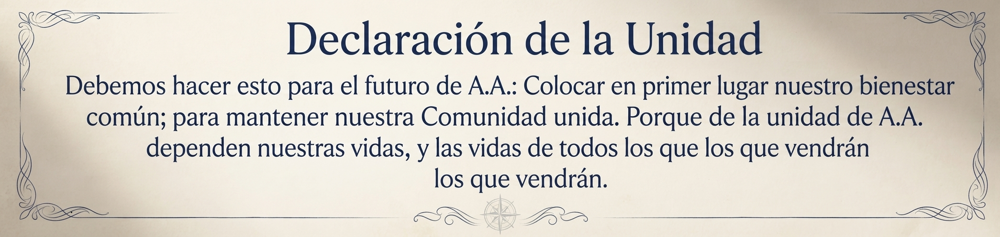
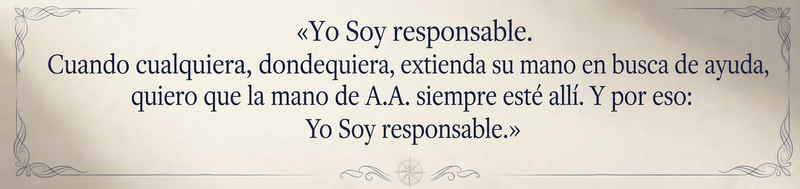

Preámbulo de Alcohólicos Anónimos
Alcohólicos Anónimos es una comunidad de hombres y mujeres que comparten su experiencia, fortaleza y esperanza con el fin de resolver su problema común y ayudar a otros a sanar del alcoholismo. El único requisito para ser miembro de AA es el deseo de dejar de beber. Para ser miembro de AA no se pagan honorarios ni cuotas; nos mantenemos con nuestras propias contribuciones. AA no está afiliada a ninguna secta, denominación, partido político, organización o institución; no desea intervenir en controversias ni respalda ni se opone a ninguna causa. Nuestro objetivo primordial es mantenernos sobrios y ayudar a otros alcohólicos a alcanzar el estado de sobriedad.

